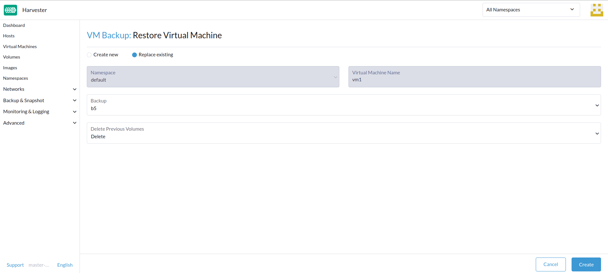
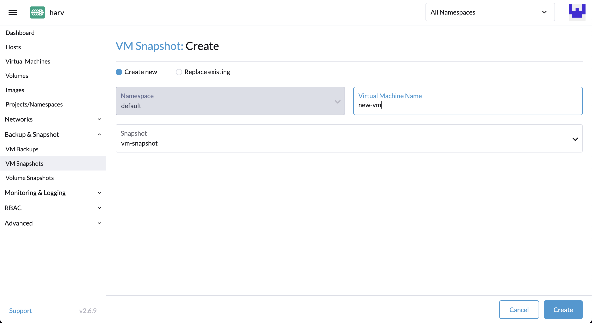
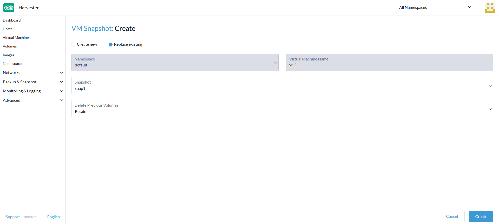
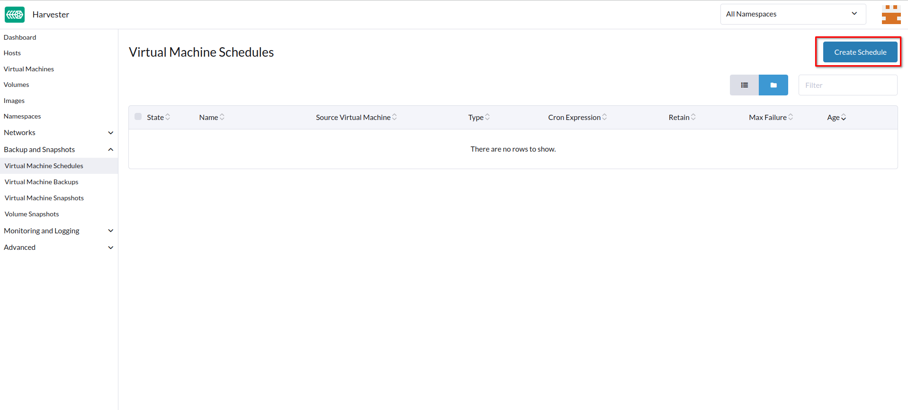
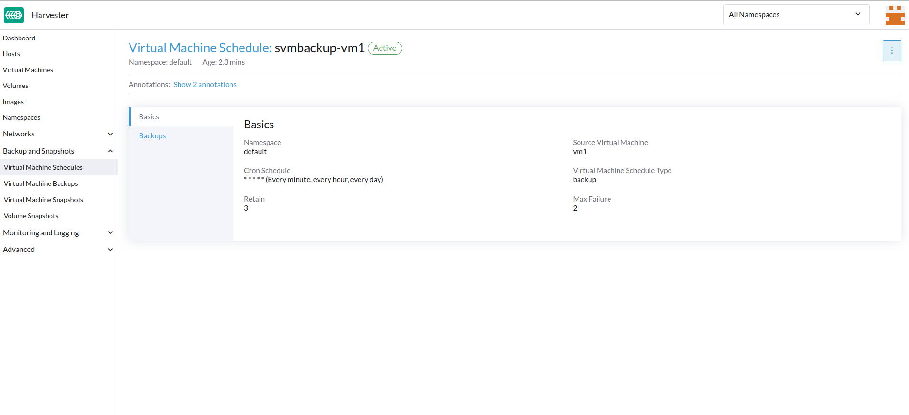
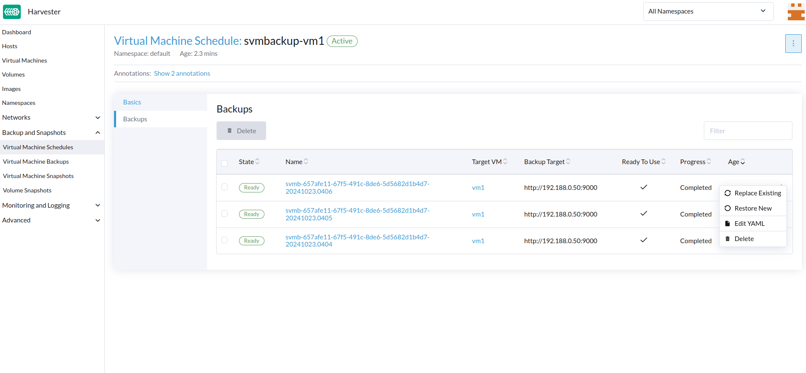
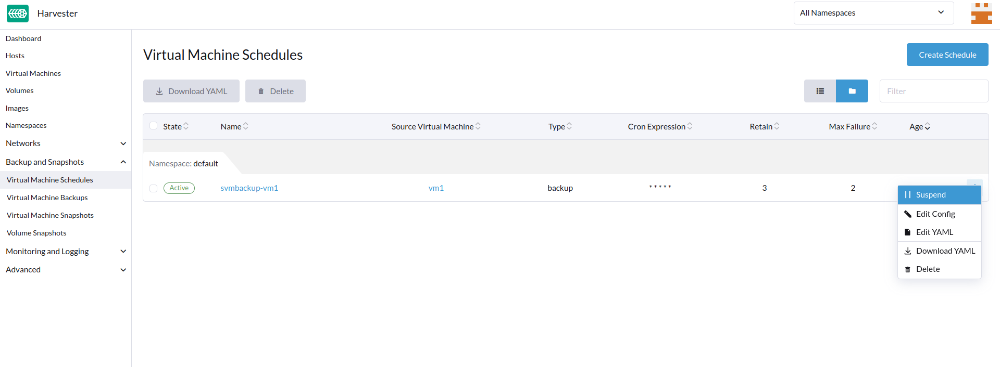

|
Este documento foi traduzido usando tecnologia de tradução automática de máquina. Sempre trabalhamos para apresentar traduções precisas, mas não oferecemos nenhuma garantia em relação à integridade, precisão ou confiabilidade do conteúdo traduzido. Em caso de qualquer discrepância, a versão original em inglês prevalecerá e constituirá o texto official. |
Backup, Instantâneo e Restauração de Máquina Virtual
Backup e Restauração de Máquina Virtual
Os backups de máquina virtual são criados a partir da página Máquinas Virtuais. Os volumes de backup da máquina virtual serão armazenados no Destino de Backup (um servidor NFS ou S3), e podem ser usados para restaurar uma nova máquina virtual ou substituir uma máquina virtual existente.

|
Um destino de backup deve ser configurado. Para obter mais informações, consulte [Configure Backup Target]. Se nenhum destino de backup estiver configurado, uma mensagem solicitará que você configure um. O suporte a backup é atualmente limitado a SUSE Storage volumes. SUSE Virtualization não consegue criar backups de volumes em armazenamento externo. |
Configurar Destino de Backup
Um destino de backup é um ponto final usado para acessar um backup store em SUSE Virtualization. Um backup store é um servidor NFS ou um servidor compatível com S3 que armazena os backups dos volumes da máquina virtual. O destino de backup pode ser configurado em Settings > backup-target.
A tabela a seguir descreve os parâmetros comuns a todos os destinos de backup.
| Parâmetro | Tipo | Descrição |
|---|---|---|
|
string |
Tipo de servidor que armazena os backups dos volumes usados por máquinas virtuais. Você pode selecionar |
|
inteiro |
Número de segundos que SUSE Virtualization aguarda antes de sincronizar os backups com o backupstore. Quando o valor é |
-
S3
-
NFS
| Parâmetro | Tipo | Descrição |
|---|---|---|
|
string |
(Opcional) Nome do host ou endereço IP do ponto final usado para acessar o servidor S3 |
|
string |
Nome do bucket S3 |
|
string |
Região da AWS na qual o bucket S3 foi criado |
|
string |
Primeira parte da chave de acesso que você usa para autenticar solicitações aos serviços da AWS (por exemplo, |
|
string |
Segunda parte da chave de acesso que você usa para autenticar solicitações aos serviços da AWS (por exemplo, |
Certificado |
string |
Certificado SSL autoassinado do servidor S3 |
VirtualHostedStyle |
boolean |
Opção para usar URLs no estilo de host virtual, onde o nome do bucket faz parte do nome de domínio na URL ( |
| Parâmetro | Tipo | Descrição |
|---|---|---|
Segurança |
string |
URL do servidor NFS |
Criar um backup de Máquina Virtual
-
Uma vez que o destino de backup esteja configurado, vá para a página
Virtual Machines. -
Clique em
Take Backupdas ações da máquina virtual para criar um novo backup de máquina virtual. -
Defina um nome de backup personalizado e clique em
Createpara criar um novo backup de máquina virtual.
Resultado: O backup é criado. Você receberá uma mensagem de notificação, e também pode ir para a página Backup & Snapshot > VM Backups para visualizar todos os backups de máquinas virtuais.
O State será definido como Ready assim que o backup for concluído.

Os usuários podem restaurar uma nova máquina virtual ou substituir uma máquina virtual existente usando este backup.
|
A configuração de rede de uma máquina virtual executando uma versão do Ubuntu posterior à 16.04 é provavelmente gerenciada por A máquina virtual restaurada mantém o ID da máquina da máquina virtual original. Se |
|
A partir da versão v1.7.0, SUSE Virtualization suporta backups e instantâneos para volumes do Longhorn V2 Data Engine. No entanto, excluir o backup mais recente de uma máquina virtual ou habilitar a configuração SUSE Storage Limpeza Automática de Instantâneo ao Excluir Backup bloqueia todas as operações subsequentes em volumes relacionados. Este é um problema conhecido que afeta operações como instantâneos de volume, backups e migração ao vivo. Atualmente, não há uma solução viável disponível. Resolver o estado bloqueado requer a exclusão do volume afetado para restaurar a funcionalidade do Longhorn Manager. |
Restaure uma nova máquina virtual usando um backup
-
Vá para a página
VM Backups. -
Clique no botão
Restore Backupno canto superior direito. -
Especifique o novo nome da máquina virtual e clique em
Create. -
Uma nova máquina virtual será restaurada usando os volumes de backup e os metadados, e você poderá acessá-la a partir da página
Virtual Machines.
Substitua uma máquina virtual existente usando um backup
Você pode substituir uma máquina virtual existente usando o backup com o mesmo destino de backup da máquina virtual.
Você pode optar por excluir ou manter os volumes anteriores. Por padrão, todos os volumes anteriores são excluídos.
Requisitos: A máquina virtual deve existir e estar desligada.
-
Vá para a página
VM Backups. -
Clique no botão
Restore Backupno canto superior direito. -
Clique em
Replace Existing. -
Você pode visualizar o processo de restauração a partir da página
Virtual Machines.
Restaure uma nova máquina virtual em outro cluster SUSE Virtualization
Os usuários agora podem restaurar uma nova máquina virtual em outro cluster aproveitando o recurso de backup de metadados e conteúdo da máquina virtual.
Pré-requisitos
-
v1.4.0 e posteriores: O controlador sincroniza automaticamente as imagens da máquina virtual com o novo cluster, exceto quando uma imagem da máquina virtual com o mesmo nome ou nome de exibição já existe no novo cluster.
-
Anterior a v1.4.0: Você deve fazer o upload e configurar as imagens da máquina virtual no novo cluster. Certifique-se de que os nomes das imagens e a configuração sejam idênticos para que as máquinas virtuais possam ser restauradas.
Carregue as mesmas imagens de máquinas virtuais para um novo cluster.
-
Baixe a imagem da máquina virtual do cluster existente.

-
Descompacte a imagem baixada.
$ gzip -d <image.gz>
-
Hospede a imagem em um servidor que seja acessível ao novo cluster.
Exemplo (servidor HTTP simples):
$ python -m http.server
-
Verifique o nome da imagem existente (normalmente começa com
image-) e crie o mesmo no novo cluster.$ kubectl get vmimages -A NAMESPACE NAME DISPLAY-NAME SIZE AGE default image-79hdq focal-server-cloudimg-amd64.img 566886400 5h36m default image-l7924 harvester-v1.0.0-rc2-amd64.iso 3964551168 137m default image-lvqxn opensuse-leap-15.3.x86_64-nocloud.qcow2 568524800 5h35m -
Aplique um YAML
VirtualMachineImagecom o mesmo nome e configuração no novo cluster.Exemplo:
$ cat <<EOF | kubectl apply -f - apiVersion: harvesterhci.io/v1beta1 kind: VirtualMachineImage metadata: name: image-79hdq namespace: default spec: displayName: focal-server-cloudimg-amd64.img pvcName: "" pvcNamespace: "" sourceType: download url: https://<server-ip-to-host-image>:8000/<image-name> EOF
SUSE Virtualization pode restaurar máquinas virtuais apenas se o nome da imagem e a configuração em ambos os clusters, antigo e novo, forem idênticos.
Restaure uma nova máquina virtual em um novo cluster.
-
Configure o mesmo destino de backup em um novo cluster. E o controlador de backup sincronizará automaticamente os metadados de backup para o novo cluster.
-
Vá para a página
VM Backups. -
Selecione os metadados de backup da máquina virtual sincronizados e escolha restaurar uma nova máquina virtual com um nome de máquina virtual especificado.
-
Uma nova máquina virtual será restaurada usando os volumes e metadados de backup. Você pode acessá-la a partir da página
Virtual Machines.
Instantâneo e Restauração de Máquina Virtual
Os instantâneos de máquinas virtuais são criados a partir da página Máquinas Virtuais. Os volumes de instantâneo da máquina virtual serão armazenados no cluster e podem ser usados para restaurar uma nova máquina virtual ou substituir uma máquina virtual existente.

Crie um Instantâneo de Máquina Virtual
-
Vá para a página
Virtual Machines. -
Clique em
Take VM Snapshotdas ações da VM para criar um novo instantâneo de máquina virtual. -
Defina um nome de instantâneo personalizado e clique em
Createpara criar um novo instantâneo de máquina virtual.
Resultado: O instantâneo é criado. Você também pode ir para a página Backup & Snapshot > virtual machine Snapshots para visualizar todos os instantâneos de VM.
O State será definido como Ready assim que o instantâneo estiver completo.

Os usuários podem restaurar uma nova máquina virtual ou substituir uma máquina virtual existente usando este instantâneo.
|
A configuração de rede de uma máquina virtual executando uma versão do Ubuntu posterior à 16.04 é provavelmente gerenciada por A máquina virtual restaurada mantém o ID da máquina da máquina virtual original. Se |
|
A partir da versão v1.7.0, SUSE Virtualization suporta backups e instantâneos para volumes do Longhorn V2 Data Engine. No entanto, excluir o backup mais recente de uma máquina virtual bloqueia todas as operações subsequentes em volumes relacionados. Este é um problema conhecido que afeta operações como instantâneos de volume, backups e migração ao vivo. Atualmente, não há uma solução viável disponível. Resolver o estado bloqueado requer a exclusão do volume afetado para restaurar a funcionalidade do Longhorn Manager. |
Restaure uma nova máquina virtual usando um instantâneo
-
Vá para a página
VM Snapshots. -
Clique no botão
Restore Snapshotno canto superior direito. -
Especifique o novo nome da máquina virtual e clique em
Create. -
Uma nova máquina virtual será restaurada usando os volumes e metadados do instantâneo, e você pode acessá-la a partir da página
Virtual Machines.
Substitua uma máquina virtual existente usando um instantâneo
Você pode substituir uma máquina virtual existente usando o instantâneo.
|
Você só pode optar por reter os volumes anteriores. |
-
Vá para a página
VM Snapshots. -
Clique no botão
Restore Snapshotno canto superior direito. -
Clique em
Replace Existing. -
Você pode visualizar o processo de restauração a partir da página
Virtual Machines.
Gerenciamento de Espaço de Instantâneo de Máquina Virtual
Os volumes consomem espaço em disco extra no cluster sempre que você cria um novo backup ou instantâneo de máquina virtual. Para gerenciar isso, você pode configurar limites de uso de espaço nos níveis de namespace e máquina virtual. Os valores configurados representam a quantidade máxima de espaço em disco que pode ser usada por todos os backups e instantâneos. Nenhum limite é definido por padrão.
Configure o Limite de Uso de Espaço de Instantâneo no Nível de Namespace
-
Vá para a tela Namespaces.
-
Localize o namespace de destino e, em seguida, selecione ⋮ → Editar Cota.

-
Especifique a quantidade máxima de espaço em disco que pode ser consumida por todos os instantâneos no namespace e clique em Salvar.

-
Verifique se o valor configurado é exibido na tela de Namespaces.

Configure o Limite de Uso de Espaço de Instantâneo no Nível da Máquina Virtual
-
Vá para a tela de Máquinas Virtuais.
-
Localize a máquina virtual de destino e selecione ⋮ → Editar Cota da VM.

-
Especifique a quantidade máxima total de espaço em disco que pode ser consumida por todos os instantâneos da máquina virtual e clique em Salvar.

-
Verifique se o valor configurado é exibido na aba Cotas da tela de detalhes da máquina virtual.

Congelamento de sistema de arquivos para backups e instantâneos de máquinas virtuais
Quando uma máquina virtual convidada está conectada com o Agente Convidado QEMU, o SUSE Virtualization controlador realiza operações de congelamento de sistema de arquivos através do aplicativo virt-freezer do Kubevirt para garantir a consistência do sistema de arquivos durante backups e instantâneos de máquinas virtuais.
Esse recurso é particularmente valioso para máquinas virtuais com alta atividade de E/S ou dados críticos que requerem garantias de consistência em um ponto no tempo.
Pré-requisitos
A funcionalidade de congelamento e descongelamento de sistema de arquivos depende da configuração da máquina virtual, que não é controlada por SUSE Virtualization. Você deve garantir que as máquinas virtuais estejam configuradas corretamente e suportem os comandos libvirt necessários.
-
Red Hat Enterprise Linux (RHEL) e SUSE Linux Enterprise (SLE) Micro: Esses sistemas podem não ter permissões suficientes para operações de congelamento de sistema de arquivos por padrão. Você pode ser solicitado a criar políticas SELinux personalizadas.
-
Windows: As operações de congelamento de sistema de arquivos estão disponíveis nesses sistemas apenas quando o serviço Volume Shadow Copy Service (VSS) está habilitado.
|
Quando o aplicativo virt-freezer é acionado, o KubeVirt se comunica com o Agente Convidado QEMU para traduzir chamadas específicas do sistema operacional. Sistemas Linux usam chamadas de sistema fsfreeze, enquanto sistemas Windows usam APIs VSS. |
Verificando a compatibilidade de congelamento de sistema de arquivos
Para verificar se sua máquina virtual suporta operações de congelamento de sistema de arquivos, execute os seguintes passos:
-
Acesse o contêiner virt-launcher
computeda máquina virtual.POD=$(kubectl get pods -n default \ -l vm.kubevirt.io/name=vm1 \ -o jsonpath='{.items[0].metadata.name}') kubectl exec -it $POD -n default -c compute -- bash -
Tente congelar o sistema de arquivos usando o aplicativo virt-freezer, que está disponível no contêiner
compute:virt-freezer --freeze --namespace <VM namespace> --name <VM name> -
Verifique o resultado da operação de congelamento.
Não pule esta etapa. Além disso, você deve descongelar os sistemas de arquivos da máquina virtual antes de realizar qualquer outra operação.
Solução de problemas de congelamento de sistema de arquivos
Erro de congelamento de sistema de arquivos devido a permissões insuficientes
Um erro Failed to freeze filesystem pode causar falhas de backup ou de instantâneos em algumas distribuições Linux.
Esse problema geralmente ocorre quando o SELinux nega acesso de leitura ao QEMU Guest Agent (qemu-ga). Você pode verificar a causa usando os seguintes passos:
-
[Verifique se sua máquina virtual suporta operações de congelamento de sistema de arquivos](#verifying-filesystem-freeze-compatibility).
-
Verifique se há erros
Permission denieddo SELinux nos logs do sistema.Se você ver uma mensagem semelhante à seguinte, o SELinux está bloqueando o acesso necessário:
{"component":"freezer","level":"error","msg":"Freezing VMI failed","reason":"server error. command Freeze failed: \"LibvirtError(Code=1, Domain=10, Message='internal error: unable to execute QEMU agent command 'guest-fsfreeze-freeze': failed to open /data: Permission denied')\""}
Para resolver o problema, você deve criar e instalar um módulo de política SELinux personalizado. Esta solução foi verificada para funcionar com RHEL e SLE Micro.
|
Usar |
-
Gere um módulo de política SELinux personalizado a partir dos logs de auditoria.
grep qemu-ga /var/log/audit/audit.log | audit2allow -M my_qemu_ga -
Instale o módulo de política gerado.
semodule -i my_qemu_ga.pp -
Repita os passos 1 e 2 até que virt-freezer consiga congelar os sistemas de arquivos com sucesso.
Você deve descongelar os sistemas de arquivos da máquina virtual antes de realizar outras operações.
virt-freezer --unfreeze --namespace <VM namespace> --name <VM name>
Backups e instantâneos de máquinas virtuais agendados
SUSE Virtualization suporta a criação de backups e instantâneos de máquinas virtuais de forma agendada, com a opção de reter um número específico de backups e instantâneos. Você pode suspender, retomar e atualizar a programação em tempo de execução.
Crie a Programação da Máquina Virtual
-
Vá para a tela Programações de Máquina Virtual e clique em Criar Programação.

-
Defina as seguintes configurações:

-
Tipo: Selecione Backup ou Instantâneo.
-
Namespace e Nome da Máquina Virtual: Especifique o namespace e o nome da máquina virtual de origem.
-
Programação Cron: Especifique a expressão cron (uma string composta por campos separados por caracteres de espaço em branco) que define as propriedades do agendamento.
O intervalo de criação de backup ou instantâneo deve ser de pelo menos uma hora. A exclusão frequente de backups ou instantâneos resulta em alta carga de E/S.
Se duas programações tiverem o mesmo nível de granularidade, o deslocamento de tempo de cada iteração deve ser de pelo menos 10 minutos.
-
Reter: Especifique o número de backups ou instantâneos atualizados a serem retidos.
Quando esse valor for excedido, o controlador SUSE Virtualization exclui os backups ou instantâneos mais antigos, e o Longhorn inicia a purga de instantâneos.
-
Máximo de Falha: Especifique o número máximo de tentativas consecutivas de criação de backup ou instantâneos com falha que devem ser permitidas.
Quando esse valor for excedido, o controlador SUSE Virtualization suspende a programação.
-
-
Clique em Criar.
Verifique o Status de um Agendamento de Máquina Virtual
-
Vá para a tela de Agendamentos de Máquinas Virtuais.
-
Localize o agendamento alvo e clique no nome para abrir a tela de detalhes.
-
Na aba Informações Básicas, verifique se as configurações estão corretas.

-
Na aba Backups, verifique o status dos backups ou instantâneos que foram criados de acordo com o agendamento.

Backups e instantâneos marcados como Pronto podem ser usados para restaurar a máquina virtual de origem. Para obter mais informações, consulte a [Virtual Machine Backup & Restore] e o [Virtual Machine Snapshot & Restore].

Editar um Agendamento de Máquina Virtual
-
Vá para a tela de Agendamentos de Máquinas Virtuais.
-
Localize o agendamento alvo e selecione ⋮ → Editar Config.

-
Edite os valores de Agendamento Cron, Retenção ou Máximo de Falha.

-
Clique em Salvar para aplicar as mudanças.
Suspender ou Retomar um Agendamento de Máquina Virtual
Você pode suspender agendamentos ativos e retomar agendamentos suspensos.
-
Vá para a tela de Agendamentos de Máquinas Virtuais.
-
Localize o agendamento alvo e selecione ⋮ → Suspender ou Retomar.

O agendamento é automaticamente suspenso quando o número de tentativas consecutivas de falha na criação de backup ou instantâneos excede o valor de Máximo de Falha.
SUSE Virtualization não permite que você retome um agendamento suspenso para criação de backup se o destino do backup não estiver acessível.
|
Se um agendamento foi automaticamente suspenso porque o valor de Máximo de Falha foi excedido, você deve retomar explicitamente esse agendamento após verificar que o backup ou instantâneo pode ser criado com sucesso. Por exemplo, quando o destino do backup se torna acessível novamente após um período de desconexão, você pode primeiro criar um backup manualmente e verificar o resultado. |
Operações de Máquina Virtual e SUSE Virtualization Atualizações
Antes de fazer upgrade do SUSE Virtualization, certifique-se de que nenhum backup ou instantâneo de máquina virtual esteja em uso e que todos os agendamentos de máquinas virtuais estejam suspensos. A interface SUSE Virtualization exibe as seguintes mensagens de erro quando as tentativas de fazer upgrade são rejeitadas:
-
Backups ou instantâneos de máquinas virtuais estão sendo criados, excluídos ou utilizados durante a tentativa de fazer upgrade

-
Os agendamentos de máquinas virtuais estão ativos durante a tentativa de fazer upgrade

Para evitar tais problemas, a SUSE planeja implementar a suspensão automática de todos os agendamentos de máquinas virtuais antes que o processo de fazer upgrade seja iniciado. Os agendamentos suspensos também serão retomados automaticamente após a conclusão do upgrade. Para mais informações, veja Problema #6759.
|
SUSE Storage possui um recurso semelhante chamado instantâneos recorrentes e backups recorrentes, que utiliza trabalhos recorrentes para criar instantâneos ou backups dos volumes SUSE Storage. Esse recurso não está integrado ao SUSE Virtualization porque entra em conflito com certas operações (por exemplo, anexação de máquinas virtuais e upgrade do cluster). Trabalhos recorrentes de instantâneos e backups SUSE Storage também podem gerar E/S intensa sem o conhecimento do SUSE Virtualization, e, em alguns casos, até desestabilizar o cluster. Para melhores resultados, utilize o recurso backups e instantâneos agendados de máquinas virtuais no SUSE Virtualization, que possui mecanismos de proteção que mitigam E/S intensa quando possível. Novamente, SUSE Virtualization não suporta instantâneos recorrentes SUSE Storage e backups recorrentes. |